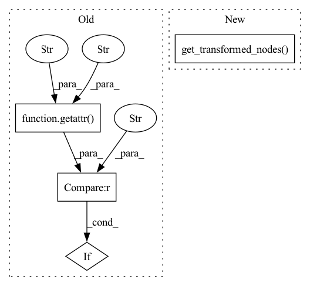

Pattern ID :18491
Before Change
def reverse(self, graph_module: "GraphModule") -> "GraphModule":
graph = graph_module.graph
for node in graph.nodes:
if getattr(node, "was_transformed", "") == "ChangeTrueDivToMulByInverse" :
node.target = operator.truediv
x, y = node.args
node.args = (x, 1 / y)After Change
return graph_module
def reverse(self, graph_module: "GraphModule") -> "GraphModule":
for node in self.get_transformed_nodes( graph_module) :
node.target = operator.truediv
x, y = node.args
node.args = (x, 1 / y)In pattern: SUPERPATTERN
Frequency: 3
Non-data size: 4
Instances Fragment ID: 60365897
Project Name: huggingface/optimum
Commit Name: 4fce92245d53191f9ef123633d71c5b7b87ec7bb
Time: 2022-09-16
Author: mickbenayoun@gmail.com
File Name: optimum/fx/optimization/transformations.py
M Class Name: ChangeTrueDivToMulByInverse
N Class Name: ChangeTrueDivToMulByInverse
M Method Name: reverse(2)
N Method Name: reverse(2)
M Parent Class: ReversibleTransformation
N Parent Class: ReversibleTransformation
M File Name: optimum/fx/optimization/transformations.py
N File Name: optimum/fx/optimization/transformations.py
M Start Line: 471
M End Line: 478
N Start Line: 471
N End Line: 477
Before Change
def reverse(self, graph_module: "GraphModule") -> "GraphModule":
for node in graph_module.graph.nodes:
if getattr(node, "was_transformed", "") == "FuseBiasInLinear" :
node.args = (node.start_node,)
n = node.end_node
while n is not node.start_node:After Change
return graph_module
def reverse(self, graph_module: "GraphModule") -> "GraphModule":
for node in self.get_transformed_nodes( graph_module) :
node.args = (node.start_node,)
n = node.end_node
while n is not node.start_node: Fragment ID: 60365896
Project Name: huggingface/optimum
Commit Name: 4fce92245d53191f9ef123633d71c5b7b87ec7bb
Time: 2022-09-16
Author: mickbenayoun@gmail.com
File Name: optimum/fx/optimization/transformations.py
M Class Name: FuseBiasInLinear
N Class Name: FuseBiasInLinear
M Method Name: reverse(2)
N Method Name: reverse(2)
M Parent Class: ReversibleTransformation
N Parent Class: ReversibleTransformation
M File Name: optimum/fx/optimization/transformations.py
N File Name: optimum/fx/optimization/transformations.py
M Start Line: 433
M End Line: 446
N Start Line: 433
N End Line: 445
Before Change
def reverse(self, graph_module: "GraphModule") -> "GraphModule":
for node in graph_module.graph.nodes:
if node.op == "call_module":
if getattr(node, "was_transformed", "") == "MergeLinears" :
self._unmerge_linears(graph_module, node, graph_module.get_submodule(node.target))
return graph_moduleAfter Change
return graph_module
def reverse(self, graph_module: "GraphModule") -> "GraphModule":
for node in self.get_transformed_nodes( graph_module) :
self._unmerge_linears(graph_module, node, graph_module.get_submodule(node.target))
return graph_module
Fragment ID: 60365898
Project Name: huggingface/optimum
Commit Name: 4fce92245d53191f9ef123633d71c5b7b87ec7bb
Time: 2022-09-16
Author: mickbenayoun@gmail.com
File Name: optimum/fx/optimization/transformations.py
M Class Name: MergeLinears
N Class Name: MergeLinears
M Method Name: reverse(2)
N Method Name: reverse(2)
M Parent Class: ReversibleTransformation
N Parent Class: ReversibleTransformation
M File Name: optimum/fx/optimization/transformations.py
N File Name: optimum/fx/optimization/transformations.py
M Start Line: 387
M End Line: 392
N Start Line: 390
N End Line: 391